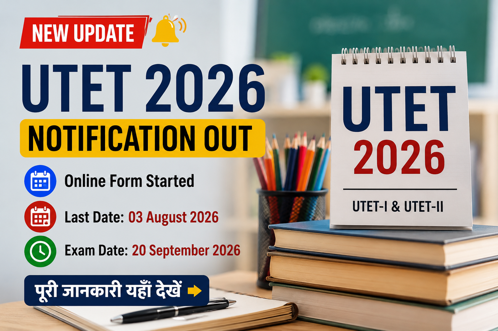

उत्तराखण्ड विद्यालयी शिक्षा परिषद (UBSE) ने UTET-I एवं UTET-II 2026 का आधिकारिक नोटिफिकेशन जारी कर दिया है। ऑनलाइन आवेदन प्रक्रिया 14 जुलाई 2026 से शुरू हो चुकी है। इच्छुक एवं पात्र अभ्यर्थी 03 अगस्त 2026 तक आधिकारिक वेबसाइट पर आवेदन कर सकते हैं।
उत्तराखण्ड शिक्षक पात्रता परीक्षा (UTET) 2026 का इंतजार कर रहे अभ्यर्थियों के लिए बड़ी खबर है। उत्तराखण्ड विद्यालयी शिक्षा परिषद (UBSE), रामनगर ने UTET-I एवं UTET-II 2026 की आधिकारिक अधिसूचना जारी कर दी है। इसके साथ ही ऑनलाइन आवेदन प्रक्रिया भी शुरू हो गई है।
जो उम्मीदवार उत्तराखण्ड के सरकारी एवं सहायता प्राप्त विद्यालयों में शिक्षक बनने की तैयारी कर रहे हैं, उनके लिए यह परीक्षा अनिवार्य है। आवेदन केवल ऑनलाइन माध्यम से स्वीकार किए जाएंगे।
| कार्यक्रम | तिथि |
|---|---|
| Notification जारी | 14 July 2026 |
| Online Application Start | 14 July 2026 |
| Last Date to Apply | 03 August 2026 (11:59 PM) |
| Fee Payment Last Date | 06 August 2026 (11:59 PM) |
| Correction Window | 08 August – 11 August 2026 |
| Exam Date | 20 September 2026 |
| Exam | Time |
|---|---|
| UTET-I | 10:00 AM – 12:30 PM |
| UTET-II | 02:00 PM – 04:30 PM |
| Category | One Paper | Both Papers |
|---|---|---|
| General / OBC | ₹600 | ₹1000 |
| SC / ST / Divyang | ₹300 | ₹500 |
UTET-I एवं UTET-II में आवेदन करने वाले उम्मीदवारों को राष्ट्रीय अध्यापक शिक्षा परिषद (NCTE) तथा उत्तराखण्ड सरकार द्वारा निर्धारित शैक्षणिक योग्यता पूरी करनी होगी। विस्तृत पात्रता की जानकारी आधिकारिक सूचना पुस्तिका (Information Brochure) में उपलब्ध है।
UTET-I एवं UTET-II 2026 के लिए ऑनलाइन आवेदन करने हेतु नीचे दिए गए आधिकारिक लिंक का उपयोग करें।
UTET-I एवं UTET-II 2026 की आवेदन प्रक्रिया शुरू हो चुकी है। इच्छुक उम्मीदवार समय रहते आवेदन करें और अंतिम तिथि का इंतजार न करें। परीक्षा 20 सितम्बर 2026 को दो अलग-अलग शिफ्टों में आयोजित की जाएगी।
यदि आप उत्तराखण्ड में शिक्षक बनने की तैयारी कर रहे हैं, तो जल्द से जल्द ऑनलाइन आवेदन करें और सभी आवश्यक दस्तावेज़ पहले से तैयार रखें।
उत्तराखण्ड विद्यालयी शिक्षा परिषद (UBSE) ने UTET-I एवं UTET-II 2026 के लिए ऑनलाइन आवेदन प्रक्रिया 14 जुलाई 2026 से शुरू कर दी है।
इच्छुक उम्मीदवार 03 अगस्त 2026 रात्रि 11:59 बजे तक ऑनलाइन आवेदन कर सकते हैं।
UTET 2026 का आवेदन शुल्क 06 अगस्त 2026 रात्रि 11:59 बजे तक ऑनलाइन जमा किया जा सकता है।
ऑनलाइन आवेदन पत्र में संशोधन (Correction) की सुविधा 08 अगस्त 2026 से 11 अगस्त 2026 तक उपलब्ध रहेगी।
UTET-I एवं UTET-II 2026 की परीक्षा 20 सितम्बर 2026 (रविवार) को आयोजित की जाएगी।
UTET-I सुबह 10:00 बजे से 12:30 बजे तक तथा UTET-II दोपहर 2:00 बजे से 4:30 बजे तक आयोजित होगी।
सामान्य एवं ओबीसी वर्ग के लिए एक पेपर का शुल्क ₹600 तथा दोनों पेपरों का ₹1000 है। SC, ST एवं दिव्यांग वर्ग के लिए एक पेपर का शुल्क ₹300 तथा दोनों पेपरों का ₹500 निर्धारित किया गया है।
उम्मीदवार UTET 2026 के लिए आधिकारिक वेबसाइट www.ukutet.com पर जाकर ऑनलाइन आवेदन कर सकते हैं।
हाँ। UTET 2026 के लिए आवेदन केवल ऑनलाइन माध्यम से ही स्वीकार किए जाएंगे। ऑफलाइन आवेदन स्वीकार नहीं किए जाएंगे।
UTET 2026 Notification, Admit Card, Answer Key, Result और अन्य सभी महत्वपूर्ण अपडेट Education Update Hub एवं आधिकारिक वेबसाइट पर नियमित रूप से उपलब्ध कराए जाएंगे।